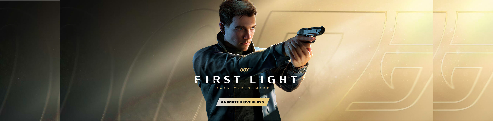
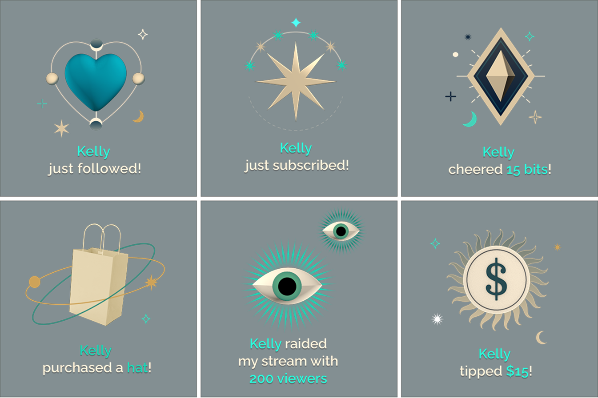
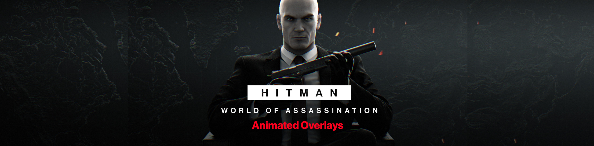
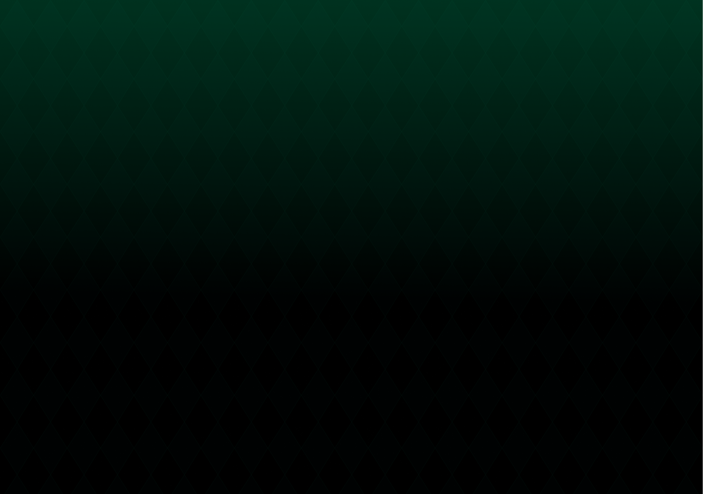

A collection of animated broadcast graphics used as waiting and transition screens throughout the live stream experience. The package includes three scenes: Starting Soon, Be Right Back, Stream Ended.

StreamElements provides free, customizable overlays that help creators engage their communities and elevate their live streams.
The library includes customizable overlays, alerts, and essential scenes such as Starting Soon, Be Right Back, and Stream Ending screens.
These resources are available for the community to download and use, helping creators elevate their broadcasts with minimal setup.

A collection of animated broadcast graphics used as waiting and transition screens throughout the live stream experience. The package includes three scenes: Starting Soon, Be Right Back, Stream Ended.


Animated on-stream graphics that provide real-time visual feedback when key stream events occur.
Alerts are dynamically populated with live data, displaying viewer names and event information such as follows, subscriptions, donations, and other community interactions.


A collection of animated broadcast graphics used as waiting and transition screens throughout the live stream experience. The package includes three scenes: Starting Soon, Be Right Back, Stream Ended.


Animated on-stream graphics that provide real-time visual feedback when key stream events occur. Alerts are dynamically populated with live data, displaying viewer names and event information such as follows, subscriptions, donations, and other community interactions.



A collection of animated broadcast graphics used as waiting and transition screens throughout the live stream experience. The package includes three scenes: Starting Soon, Be Right Back, Stream Ended.


Animated on-stream graphics that provide real-time visual feedback when key stream events occur. Alerts are dynamically populated with live data, displaying viewer names and event information such as follows, subscriptions, donations, and other community interactions.



Animated on-stream graphics that provide real-time visual feedback when key stream events occur. Alerts are dynamically populated with live data, displaying viewer names and event information such as follows, subscriptions, donations, and other community interactions.

Other projects